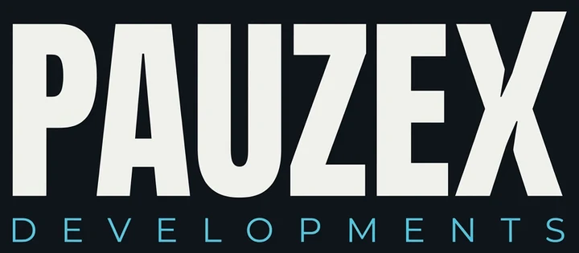

PauzePulse
↗An Android game project focused on responsive controls, distinct scenes, and dependable gameplay loops. Check the repository for the latest build.
Checking releases…
View repository
INDEPENDENT SOFTWARE DEVELOPMENT

TOOLS · APPS · OPEN SOURCE
ANDROID · WEB · OPEN SOURCE
PauzeX is Pauze’s independent software studio. It builds Android apps, web tools, and open-source projects, with source and release details shared on GitHub.
01 — ABOUT THE STUDIO
ONE DEVELOPER · FOUR FEATURED PROJECTS
PauzeX Developments is the software studio behind PauzeNews, PauzeControl, PauzeWeather, and PauzePulse.
Each project starts with a clear use: read news, check weather, control a device, or play a game. I build a working version, test it, and publish progress in the repository.
How projects are built02 — PROJECTS
REPOSITORIES & ACTIVE BUILDS
Browse four featured projects. Public repositories link to source, releases, and recent updates on GitHub.
4 projects
An Android game project focused on responsive controls, distinct scenes, and dependable gameplay loops. Check the repository for the latest build.
Mirror and control an Android device from a Mac. PauzeControl streams the screen over H.264 and connects devices through Tailscale.
An Android weather app with hourly and daily forecasts, air-quality readings, alerts, interactive radar, saved locations, and offline caching.
A Python and Kivy news reader for Android. Browse World, India, Technology, Science, Business, and Aviation headlines, search locally, save SQLite bookmarks, and revisit cached stories offline.
LIVE FROM GITHUB
Fetching the latest public commits…
Repository details load from GitHub. If the API is unavailable, public repository links remain available.
03 — ENGINEERING FOCUS
FROM PROTOTYPE TO MAINTAINABLE CODE
I start with the smallest useful version, connect the services it needs, then test real interactions before sharing a release.
Android apps and web tools, each built around one clear task.
Responsive layouts, keyboard access, and interactions that behave clearly.
Connect APIs and data sources with visible loading, empty, and error states.
Fix bugs, speed up slow paths, and keep features reliable as projects grow.
04 — FOLLOW THE PROJECTS
Browse the source, check for releases, and follow updates across PauzeX projects on GitHub.
Browse PauzeX on GitHub